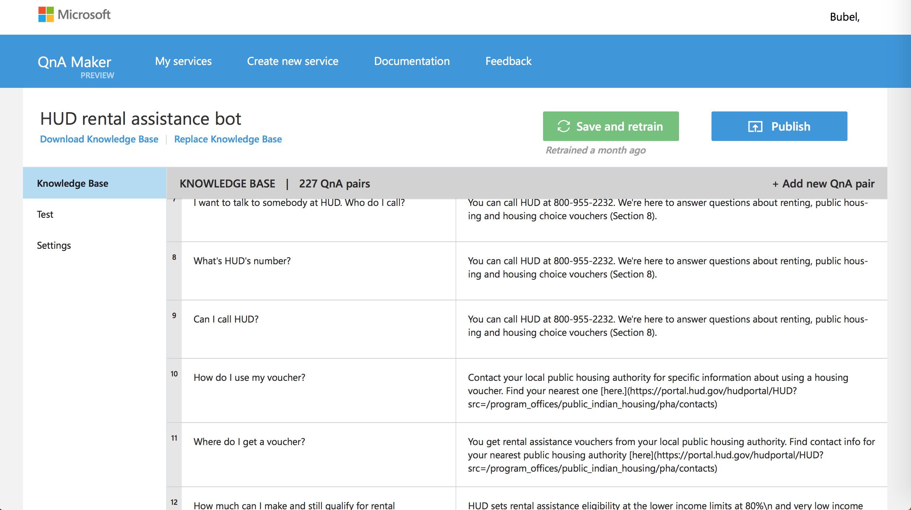

Augment the customer service ability of HUD staff to allow them to focus on cognitively-intense work.
This project is currently ongoing.
I wanted to quickly get a test bot up and running, and after comparing multiple bot frameworks and services, I settled on Microsoft’s Bot Framework.
The Bot Framework is a set of tools that allow the bot to have freeform or structured conversations with users. You can do this through simple text responses (natural language is possible), images, buttons, and speech which add interactivity to a bot. It also gives you the tools, to build, deploy and publish bots.
Part of the Bot Framework is the SDK that provides all of the features to actually build a bot. There are two options: Node JS framework (which is asynchronous JS that runs on servers) and .NET frameworks (using the C# language). Microsoft gives documentation for each framework as well as examples on GitHub which are very helpful. These examples helped me understand how to build the prototype.
The SDK provides the pieces to build the skeleton of a bot, test it out with an emulator program, which allows you to not have to first deploy your bot to test it and debug it. However, the appeal of bots is that that can have some form of AI.
Microsoft provides APIs to their Cognitive Services platform that you can use to provide the bot with natural language understanding, sentiment analysis, web search, computer vision. These are ideas that we as humans are automatically capable of doing. But, these APIs involve programming. To cut down on the amount of programming needed to get a working demo and to allow other non-technical people have a hand in actually building the bot’s knowledge, I chose the Microsoft QnAMaker service.

I’ve met with a couple people in my field office to talk about the bot, and we’ve shared it with the USA.gov team over at GSA, and I’ve given a demo and got feedback from the Philadelphia Public Housing Authority.
I gave a demo to senior management who want to keep pursuing it and put actual resources behind it.
However, the bot is for the citizen, and we need to test it with citizens.
The next step we need to take is usability testing the chat bot. The bot web page includes a link to a very short survey, but we need to start collecting many responses of questions/answers to see what kind of questions people want to find out, if the bot can handle those questions, and if the bot needs changes. For example, the conversation is completely free-flowing right now, but we could add to the to UI to include buttons or menus to give a structured path to find information. Is that better? Testing it will help us understand these things.
Beyond user testing, I would like to collect quantitative data as well. To do that, the chat bot needs to live on one of our public websites or as a live Facebook messenger bot. These options are currently being considered.